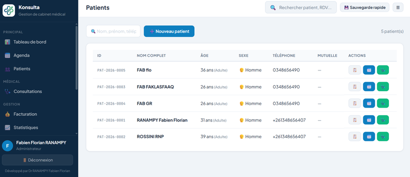
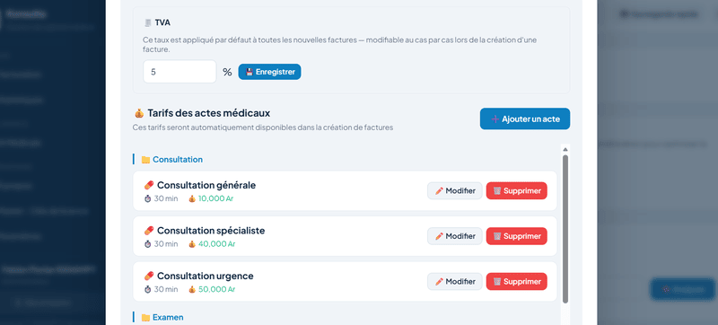
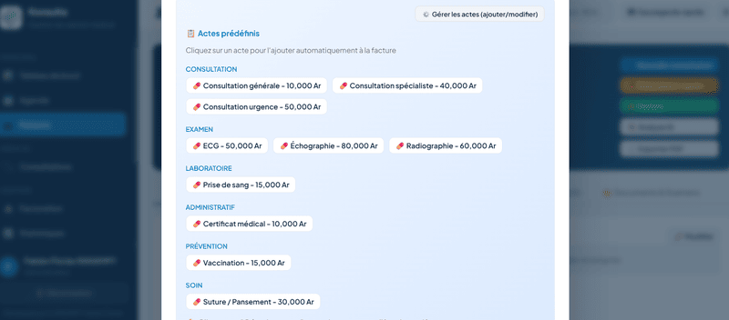
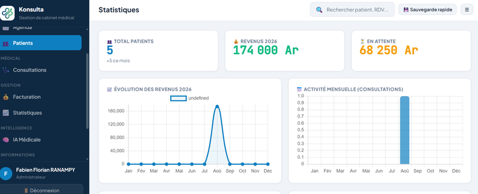

Gestion des patients
Créez et retrouvez chaque dossier patient en quelques secondes : identité, contact, antécédents, tout au même endroit.
Logiciel de gestion de cabinet médical
Patients, consultations, ordonnances, factures et statistiques — réunis dans un seul logiciel pensé pour les médecins et le personnel de santé. Sans complexité inutile.
Essai gratuit de 10 jours · Aucune carte bancaire requise
Présentation
Konsulta remplace les classeurs, les fiches volantes et les fichiers dispersés par une application unique : chaque dossier patient, chaque ordonnance, chaque facture reste au même endroit, accessible en quelques clics.
Le logiciel s'installe directement sur votre ordinateur — aucune connexion internet n'est nécessaire au quotidien — et peut aussi fonctionner en réseau si plusieurs médecins ou secrétaires travaillent sur les mêmes dossiers.
Fonctionnalités
Créez et retrouvez chaque dossier patient en quelques secondes : identité, contact, antécédents, tout au même endroit.
Historique médical, antécédents, allergies et constantes vitales, conservés de façon structurée et toujours accessibles.
Enregistrez chaque consultation avec ses observations, son diagnostic et son suivi, relié automatiquement au bon patient.
Générez des ordonnances claires et conformes en quelques clics, prêtes à imprimer ou à transmettre au patient.
Recherchez un médicament dans une base intégrée et l'ajoutez directement à une ordonnance, avec dosage et présentation.
Visualisez l'activité de votre cabinet : nombre de consultations, revenus, patients suivis, sur des périodes choisies.
En images
Les captures ci-dessous proviennent directement de l'application.




Apprendre
Remplacez les liens ci-dessous par vos propres vidéos YouTube
(recherchez VOTRE_ID_VIDEO dans le code source).
Téléchargement
10 jours d'essai complet, sans engagement. Installation en quelques minutes.
Compatible Windows 10 et 11 · Installation locale · Fonctionne hors connexion
Besoin d'aide pour l'installation ? Consultez la section Tutoriels ou contactez-nous.
Questions fréquentes
Oui. Konsulta fonctionne entièrement en local sur votre ordinateur — une connexion internet n'est nécessaire que pour le téléchargement initial et, éventuellement, l'activation d'une licence.
Oui. Konsulta démarre en mode un seul poste par défaut, mais peut être configuré pour fonctionner en réseau, avec plusieurs médecins ou secrétaires partageant les mêmes dossiers en temps réel.
Oui. Vous choisissez un dossier de sauvegarde, et Konsulta s'occupe du reste à intervalle régulier. Une sauvegarde manuelle immédiate est aussi disponible à tout moment.
Après 10 jours, une licence est nécessaire pour continuer à utiliser Konsulta. Vos données restent intactes et sont immédiatement accessibles dès l'activation d'une licence.
Non. Konsulta a été pensé pour être utilisable sans formation technique. Des tutoriels vidéo courts sont aussi disponibles pour chaque fonctionnalité principale.
Contact
Que ce soit pour une démonstration, une question technique ou une demande spécifique à votre cabinet, écrivez-nous.